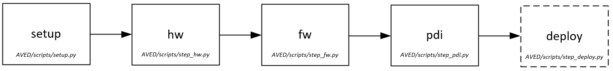
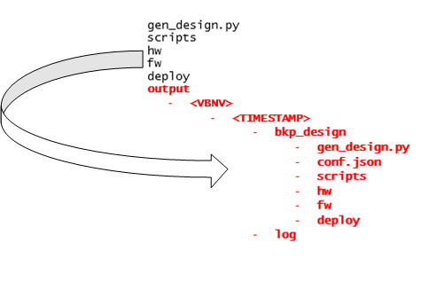
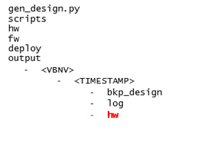
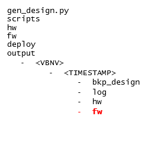
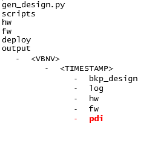
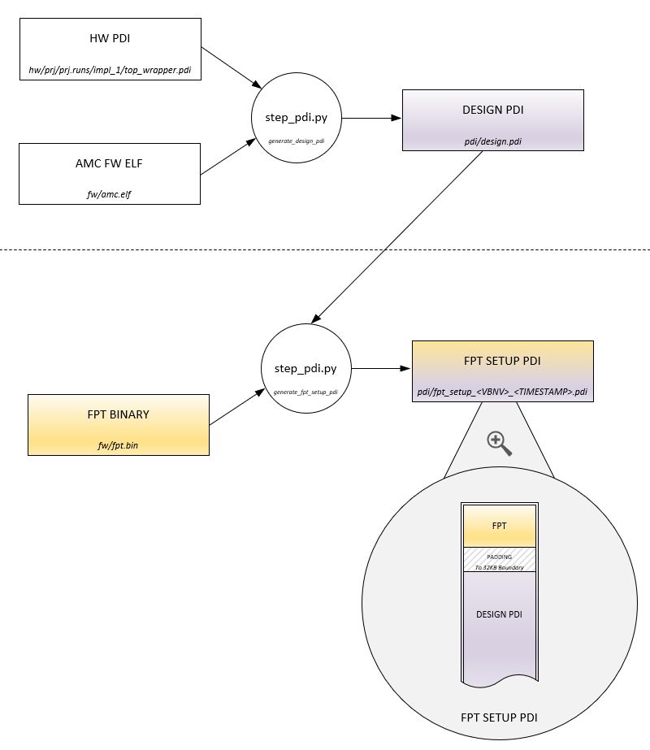
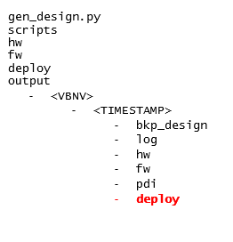

AVED Build Scripts¶
The AVED Git repository contains a python build script which can be used to build any of the AVED example designs. gen_design.py is the main build script, which calls other build scripts for each step of the build. These additional build scripts
are located within the scripts directory as shown in the following figure.
{kind=link}
{kind=link}
Command Line Options¶
The following table defines available command line options:
Option | Description | Default |
|---|---|---|
--help | Display help message. | |
--conf_json | Path to the configuration JSON file. This is a mandatory command line argument. | |
--use_lsf | Run on LSF to build HW design. | |
--lsf_cmd <cmd> | Override LSF command. |
|
--output_dir <output_dir> | Path to the output directory. | ./output/<aved design name>/<date>_<time> |
--from_step <step name> | Restart previous
| |
--single-step <step name> | Rerun previous <output_dir> build executing only given step.
| |
--verbose | Turn on verbosity. | |
--force | Override output directory if already existing. | |
--version | Display version. | |
--deploy | Include the optional deploy step. With this option set, after the other build steps have completed, a deployment archive will be generated. See AVED Deployment Archive for more details on the deployment archive. |
Configuration¶
The main design configuration file is specified with a JSON file. The JSON file is consumed by the build scripts and used to generate and customize the design. The configuration file simplifies the need to modify multiple files/scripts to change basic characteristics of the design.
Conf JSON¶
The --conf_json option is used to select which configuration JSON is used in the build. For this reason, the script requires that a Config JSON be provided.
The Config JSON files for AVED example designs can be found in the hw/<VBNV>/ directory.
{kind=link}
Three example JSON files are provided for each design in the AVED repository’s hw folder. The figure above shows 3 different JSONs to enable 3 different variants of the amd_v80_gen5x8_23.2_exdes_1 AVED design to be built.
conf_xbtest.json¶
The conf_xbtest.json configuration file will build an AVED design, which contains the standard xbtest IP. More details on the xbtest IP can be found in the AVED Deployment section.
This is the recommended JSON file to use for a developer who would like to experiment with building the AVED design.
conf_xbtest_stress.json¶
The conf_xbtest_stress.json configuration file will build an AVED design, which contains the standard xbtest IP along with the additional power xbtest IP. This is the prebuilt design which is provided in the released AVED deployment archive.
Developers can build this design as well, but it should be noted that the xbtest power IP consumes a lot more logic than the standard xbtest IP. Therefore, build times will be greatly increased in comparison.
conf_user.json¶
The conf_user.json configuration file creates an AVED example design without any xbtest IP. The intention of this JSON is to provide the user with a starting point to enable the developer to integrate their own IP into the AVED design structure.
See AVED - User Application for more details on how developers can do this. Details on the required contents of the conf json files are also detailed in this section with guidance on how they should be modified to suit the user’s application.
Example Build Command¶
The following command demonstrates how to run a V80 xbtest build.
$ ./gen_design.py --conf_json hw/amd_v80_gen5x8_23.2_exdes_1/conf_xbtest.json
Build Steps¶
The build script divides the build flow into a number of separate steps.

Setup¶
The setup step creates an output directory where the build takes place. The created build directory contains the VBNV of the design and a Time stamp in the hierarchal name.
The sources and scripts from the top level GIT directory are copied into this bkp_design directory so that the exact sources that were used are captured in the build directory. This gives traceability to the sources in a particular build and enables the user to easily resurrect a build and restart it from a specific step.

hw¶
With a copy of all the build sources now in the build directory, the next step in the flow is the hardware build.
A hw directory is created in the TIMESTAMP build directory. This is where the AMD Vivado™ project is generated in the prj sub directory.

This Vivado project is used to generate the BD design, run Synthesis & Implementation, and create the initial PDI.
The xpr file for this project is located here hw/prj/prj.xpr
The write_hw_platform command is run on the implemented design to create an XSA (named static.xsa), which is used as a HW handoff file to the AMC build in the fw build step.
Further, if xbtest IP is part of the design, an xbtest_metadata.json file is also created. This captures design information on the xbtest IP (such as endpoint addresses) which will later be consumed by the xbtest SW when it runs on the Host.
This allows the xbtest SW to be coded in a data-driven manner and provides an example of how this could be achieved for other host applications, if desired.
fw¶
The fw step builds the AMC firmware and generates a FPT binary. Like the hw step, a fw directory is created to contain the outputs of the fw build step.

The AMC build is run in the AMC source code directory (i.e., bkp_design/fw/AMC) using the AMC’s own build script (bkp_design/fw/AMC/scripts/build.sh).
The AMC’s build.sh can take a number of different build options (which are detailed in the AMC’s Profiles and CMake build process page), but the the AVED build flow executes it with these specific options.
# Command ./scripts/build.sh
# -os freertos10_xilinx
# -profile <board profile e.g. v80>
# -xsa <absolute_path_to_xsa>
where the os is always freertos10_xilinx, the profile is the AMD Alveo™ card name (determined from the conf.json) and the xsa is the static.xsa generated in the hw step.
The resultant ELF file from the AMC build is then stored in the fw directory (fw/amc.elf).
Another important concept of the AVED design is the FPT (see AVED - Device Programming) as this defines how the flash memory is organized.
The contents of the FPT are defined in a JSON file in the AMC source code directory bkp_design/fw/AMC/scripts/fpt.json, and another script (also in AMC source code directory - bkp_design/fw/AMC/scripts/gen_fpt.py) is used to convert the JSON contents into a binary file.
The execution of the gen_fpt.py takes place during the fw step, and the resultant binary file is also stored in the fw directory (fw/fpt.bin).
pdi¶
The pdi step is responsible for combining outputs from previous steps in order to create 2 different PDI files. Like the previous steps, a new pdi directory is generated to contain the generated PDIs.

The 2 generated PDIs are known as the Design PDI and the FPT_Setup PDI.
First, the Design PDI is created when bootgen is called to combine the PDI generated in the hw step with the AMC ELF which was generated in the fw step. This PDI contains the complete AVED design and is intended to be written to a flash partition over PCIe using AMI.

The FPT setup PDI is intended to be written to flash over JTAG using HW Manager. This PDI sets up the flash so that it can be used by AMC/AMI.
This basically means that it contains the FPT at the beginning of the memory, which AMI/AMC can then process to determine where in flash it can write different Design PDIs.
The FPT setup PDI is generated using the bkp_design/hw/fpt/scripts/fpt_pdi_gen.py script. This script takes the previously generated Design PDI and appends the FPT Binary to the start of the file. Padding is added between the FPT and the design PDI to ensure that the design PDI is aligned to a 32KB boundary (this is a requirement of the PMC boot search).
Effectively, the FPT Setup PDI configures the flash to contain the FPT along with Design PDI in the 1st PDI Partition.
Writing FPT setup PDI to flash is only required if the FPT has been modified. Otherwise, if the FPT in flash is still valid, then the Design PDI can be written to one of the PDI partitions over PCIe using AMI.
deploy (optional)¶
The deploy step is an optional step whose outputs get stored in a newly created deploy directory.

This step gathers the outputs from all the other build steps and pulls them together into an AVED deployment archive format (see AVED Deployment Archive for details).
This is an optional step and is provided to enable the user to create a ZIP like the one which is part of the AVED release if they wish to do so.
This step is only run when the --deploy command line option is used.
$ ./gen_design.py --conf_json hw/amd_v80_gen5x8_23.2_exdes_1/conf_xbtest.json --deploy
Restarting a build from a previously run step¶
The AVED build scripts allow the user to rerun certain steps on a previously run build.
There are 2 options
--single-step--from_step
--single-step only runs one specified step, whereas --from_step reruns a specified step as well as any other steps which follow that step.
When using either of these options, the user must also provide the path of the previously run build using the --output_dir option.
The --from_step is particularly useful when making changes to the AMC FW. If the AMC sources are modified in the bkp_design/fw/AMC directory of a previous build, the build script can be instructed to start at the fw step, in which case the
lengthy hw build doesn’t get repeated.
An example command of how to run the build script in this scenario is shown below. In this example, the previously run build is in the output/amd_v80_gen5x8_23.2_exdes_1/2023-10-12_12-30-31 directory, and the AMC source code was modified in the output/amd_v80_gen5x8_23.2_exdes_1/2023-10-12_12-30-31/bkp_design/fw/AMC/src directory.
$ ./gen_design.py --conf_json hw/amd_v80_gen5x8_23.2_exdes_1/conf_xbtest.json --from_step fw --output_dir output/amd_v80_gen5x8_23.2_exdes_1/2023-10-12_12-30-31
As the --from_step fw option is used, only the fw & pdi steps will be rerun, and only the fw and pdi output directories will be overwritten.
{kind=link}
Page Revision: v. 28